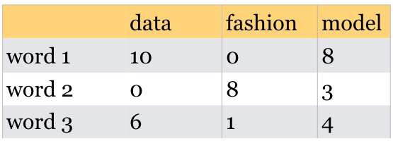

Lecture 17: Multi-class classification and introduction to computer vision¶
UBC 2020-21
Instructor: Varada Kolhatkar
Imports¶
import glob
import os
import matplotlib.pyplot as plt
import numpy as np
import pandas as pd
from sklearn import datasets
from sklearn.dummy import DummyClassifier
from sklearn.ensemble import RandomForestClassifier
from sklearn.linear_model import LinearRegression, LogisticRegression
from sklearn.metrics import (
classification_report,
confusion_matrix,
plot_confusion_matrix,
)
from sklearn.model_selection import train_test_split
from sklearn.pipeline import Pipeline, make_pipeline
from sklearn.svm import SVC
Lecture plan¶
Announcements (~2 min)
Recap (~5 mins)
Multi-class classification (20 min)
Intro to computer vision (10 min)
Break (5 min)
Intro to neural networks (15 min)
Neural networks for images (10 min)
Pre-trained networks (10 min)
Transfer learning (15 min)
Learning objectives¶
Apply classifiers to multi-class classification algorithms.
Explain the role of neural networks in machine learning, and the pros/cons of using them.
Explain why the methods we’ve learned previously would not be effective on image data.
Apply pre-trained neural networks to classification and regression problems.
Utilize pre-trained networks as feature extractors and combine them with models we’ve learned previously.
Recap¶
True/False questions¶
Word representation created by term-term co-occurrence matrix are long and sparse whereas the ones created by Word2Vec are short and dense.
It’s possible to use word representations for text classification instead of bag-of-words representation.
Questions for discussion¶
Given the following table, which word pair is more similar in terms of dot product: (word 1, word 2) or (word 1, word 3)?

True/False questions¶
The topic model approach we used in the last lecture, Latent Dirichlet Allocation (LDA), is an unsupervised approach.
In an LDA topic model, the same word can be associated with two different topics with high probability.
In an LDA topic model, a document is a mixture of multiple topics.
If I train a topic model on a large collection of news articles with K = 10, I would get 10 topic labels (e.g., sports, culture, politics, finance) as output.
Multi-class, meta-strategies¶
So far we have been talking about binary classification
Can we use these classifiers when there are more than two classes?
“ImageNet” computer vision competition, for example, has 1000 classes
Can we use decision trees or KNNs for multi-class classification?
What about logistic regression and Linear SVMs?
Many linear classification models don’t extend naturally to the multiclass case.
A common technique is to reduce multiclass classication into several instances of binary classification problems.
Two kind of “hacky” ways to reduce multi-class classification into binary classification:
the one-vs.-rest approach
the one-vs.-one approach
One vs. Rest¶
1v{2,3}, 2v{1,3}, 3v{1,2}
Learn a binary model for each class which tries to separate that class from all of the other classes.
If you have \(k\) classes, it’ll train \(k\) binary classifiers, one for each class.
Trained on imbalanced datasets containing all examples.
Given a test point, get scores from all binary classifiers (e.g., raw scores for logistic regression).
The classifier which has the highest score for this class “wins” and that’s going to be the prediction for this class.
Since we have one binary classifier per class, for each class, we have coefficients per feature and an intercept.
Note
Note that there is also a multinomial logistic regression also called as the maxent classifier. This is different than the above multi-class meta strategies. More on this in DSCI 573.
Let’s create some synthetic data with two features and three classes.
import mglearn
from sklearn.datasets import make_blobs
X, y = make_blobs(centers=3, n_samples=120, random_state=42)
X_train, X_test, y_train, y_test = train_test_split(
X, y, test_size=0.2, random_state=123
)
mglearn.discrete_scatter(X_train[:, 0], X_train[:, 1], y_train)
plt.xlabel("Feature 0")
plt.ylabel("Feature 1")
plt.legend(["Class 0", "Class 1", "Class 2"]);
lr = LogisticRegression(max_iter=2000, multi_class="ovr")
lr.fit(X_train, y_train)
print("Coefficient shape: ", lr.coef_.shape)
print("Intercept shape: ", lr.intercept_.shape)
Coefficient shape: (3, 2)
Intercept shape: (3,)
This learns three binary linear models.
So we have coefficients for two features for each of these three linear models.
Also we have three intercepts, one for each class.
mglearn.discrete_scatter(X_train[:, 0], X_train[:, 1], y_train)
line = np.linspace(-15, 15)
for coef, intercept, color in zip(lr.coef_, lr.intercept_, mglearn.cm3.colors):
plt.plot(line, -(line * coef[0] + intercept) / coef[1], c=color)
plt.ylim(-10, 15)
plt.xlim(-10, 8)
plt.xlabel("Feature 0")
plt.ylabel("Feature 1")
plt.legend(
["Class 0", "Class 1", "Class 2", "Line class 0", "Line class 1", "Line class 2"],
loc=(1.01, 0.3),
);

def plot_test_points():
test_points = [[-4.0, 12], [-2, 0.0], [-8, 3.0], [4, 8.5]]
plt.plot(test_points[0][0], test_points[0][1], "k*", markersize=16)
plt.plot(test_points[1][0], test_points[1][1], "k*", markersize=16)
plt.plot(test_points[2][0], test_points[2][1], "k*", markersize=16)
plt.plot(test_points[3][0], test_points[3][1], "k*", markersize=16)
How would you classify the following points?
Pick the class with the highest value for the classification formula.
# You don't have to understand the code.
mglearn.discrete_scatter(X_train[:, 0], X_train[:, 1], y_train)
line = np.linspace(-15, 15)
for coef, intercept, color in zip(lr.coef_, lr.intercept_, mglearn.cm3.colors):
plt.plot(line, -(line * coef[0] + intercept) / coef[1], c=color)
plot_test_points()
plt.ylim(-10, 15)
plt.xlim(-10, 8)
plt.xlabel("Feature 0")
plt.ylabel("Feature 1")
plt.legend(
["Class 0", "Class 1", "Class 2", "Line class 0", "Line class 1", "Line class 2"],
loc=(1.01, 0.3),
);
# You don't have to understand the code below.
mglearn.plots.plot_2d_classification(lr, X_train, fill=True, alpha=0.7)
mglearn.discrete_scatter(X_train[:, 0], X_train[:, 1], y_train)
line = np.linspace(-15, 15)
for coef, intercept, color in zip(lr.coef_, lr.intercept_, mglearn.cm3.colors):
plt.plot(line, -(line * coef[0] + intercept) / coef[1], c=color)
plot_test_points()
plt.legend(
["Class 0", "Class 1", "Class 2", "Line class 0", "Line class 1", "Line class 2"],
loc=(1.01, 0.3),
)
plt.xlabel("Feature 0")
plt.ylabel("Feature 1");

One Vs. One approach¶
Build a binary model for each pair of classes.
1v2, 1v3, 2v3
Trains \(\frac{n \times (n-1)}{2}\) binary classifiers
Trained on relatively balanced subsets
One Vs. One prediction¶
Apply all of the classifiers on the test example.
Count how often each class was predicted.
Predict the class with most votes.
Using OVR and OVO as wrappers¶
You can use these strategies as meta-strategies for any binary classifiers.
When do we use
OneVsRestClassifierandOneVsOneClassifierIt’s not that likely for you to need
OneVsRestClassifierorOneVsOneClassifierbecause most of the methods you’ll use will have native multi-class support.However, it’s good to know in case you ever need to extend a binary classifier (perhaps one you’ve implemented on your own).
from sklearn.multiclass import OneVsOneClassifier, OneVsRestClassifier
# Let's examine the time taken by OneVsRestClassifier and OneVsOneClassifier
# generate blobs with fixed random generator
X_multi, y_multi = make_blobs(n_samples=1000, centers=20, random_state=300)
X_train_multi, X_test_multi, y_train_multi, y_test_multi = train_test_split(
X_multi, y_multi
)
plt.scatter(*X_multi.T, c=y_multi, marker=".", cmap="Dark2");
model = OneVsOneClassifier(LogisticRegression())
%timeit model.fit(X_train_multi, y_train_multi);
print("With OVO wrapper")
print(model.score(X_train_multi, y_train_multi))
print(model.score(X_test_multi, y_test_multi))
531 ms ± 9.19 ms per loop (mean ± std. dev. of 7 runs, 1 loop each)
With OVO wrapper
0.8013333333333333
0.74
model = OneVsRestClassifier(LogisticRegression())
%timeit model.fit(X_train_multi, y_train_multi);
print("With OVR wrapper")
print(model.score(X_train_multi, y_train_multi))
print(model.score(X_test_multi, y_test_multi))
77.8 ms ± 1.2 ms per loop (mean ± std. dev. of 7 runs, 10 loops each)
With OVR wrapper
0.736
0.644
As expected OVO takes more time compared to OVR.
Here you will find summary of how
scikit-learnhandles multi-class classification for different classifiers.
True/False¶
One-vs.-one strategy uses all the available data when training each binary classifier.
For a 100-class classification problem, one-vs.-rest multi-class strategy will create 100 binary classifiers.
Multi-class classification on HappyDB corpus¶
Let’s examine precision, recall, and f1-score of different classes in the HappyDB corpus.
df = pd.read_csv("data/cleaned_hm.csv", index_col=0)
sample_df = df.dropna()
sample_df.head()
sample_df = sample_df.rename(
columns={"cleaned_hm": "moment", "ground_truth_category": "target"}
)
sample_df.head()
| wid | reflection_period | original_hm | moment | modified | num_sentence | target | predicted_category | |
|---|---|---|---|---|---|---|---|---|
| hmid | ||||||||
| 27676 | 206 | 24h | We had a serious talk with some friends of our... | We had a serious talk with some friends of our... | True | 2 | bonding | bonding |
| 27678 | 45 | 24h | I meditated last night. | I meditated last night. | True | 1 | leisure | leisure |
| 27697 | 498 | 24h | My grandmother start to walk from the bed afte... | My grandmother start to walk from the bed afte... | True | 1 | affection | affection |
| 27705 | 5732 | 24h | I picked my daughter up from the airport and w... | I picked my daughter up from the airport and w... | True | 1 | bonding | affection |
| 27715 | 2272 | 24h | when i received flowers from my best friend | when i received flowers from my best friend | True | 1 | bonding | bonding |
sample_df["target"].value_counts()
affection 4810
achievement 4276
bonding 1750
enjoy_the_moment 1514
leisure 1306
nature 252
exercise 217
Name: target, dtype: int64
It’s a multiclass classification problem!
train_df, test_df = train_test_split(sample_df, test_size=0.3, random_state=123)
X_train_happy, y_train_happy = train_df["moment"], train_df["target"]
X_test_happy, y_test_happy = test_df["moment"], test_df["target"]
from sklearn.feature_extraction.text import CountVectorizer
pipe_lr = make_pipeline(
CountVectorizer(stop_words="english"), LogisticRegression(max_iter=2000)
)
pipe_lr.fit(X_train_happy, y_train_happy)
Pipeline(steps=[('countvectorizer', CountVectorizer(stop_words='english')),
('logisticregression', LogisticRegression(max_iter=2000))])
preds = pipe_lr.predict(X_test_happy)[:5]
preds
array(['achievement', 'affection', 'bonding', 'enjoy_the_moment',
'affection'], dtype=object)
Note that the output of predict_proba now contains a probability for each class:
pipe_lr.predict_proba(X_test_happy)[:5]
array([[7.06452735e-01, 3.74990512e-02, 5.65452910e-02, 4.48402307e-02,
3.05695520e-02, 1.10315940e-01, 1.37772001e-02],
[4.51072728e-03, 9.89340344e-01, 5.83681077e-04, 3.70783018e-03,
2.90885763e-04, 6.37026425e-04, 9.29504857e-04],
[2.13263756e-03, 1.51560371e-02, 9.78843659e-01, 1.36500305e-03,
1.26026669e-03, 9.41813463e-04, 3.00582712e-04],
[1.13081731e-01, 9.17848470e-02, 2.38839233e-02, 5.06682251e-01,
7.30919639e-03, 2.49577231e-01, 7.68082098e-03],
[7.71875969e-02, 5.53222816e-01, 3.87142940e-02, 8.14779901e-02,
2.38187000e-02, 2.08421459e-01, 1.71571441e-02]])
And you’ll see that each row adds up to 1, as expected:
pipe_lr.predict_proba(X_test_happy).sum(axis=1)
array([1., 1., 1., ..., 1., 1., 1.])
We can also make a confusion matrix:
from sklearn.metrics import plot_confusion_matrix
disp = plot_confusion_matrix(
pipe_lr,
X_test_happy,
y_test_happy,
values_format="d",
xticks_rotation="vertical",
colorbar=False,
);
And print the classification report.
print(classification_report(y_test_happy, pipe_lr.predict(X_test_happy)))
precision recall f1-score support
achievement 0.79 0.87 0.83 1302
affection 0.90 0.91 0.91 1423
bonding 0.91 0.85 0.88 492
enjoy_the_moment 0.60 0.54 0.57 469
exercise 0.91 0.57 0.70 74
leisure 0.73 0.70 0.71 407
nature 0.73 0.46 0.57 71
accuracy 0.82 4238
macro avg 0.80 0.70 0.74 4238
weighted avg 0.82 0.82 0.81 4238
Seems like there is a lot of variation in the scores for different classes.
The model is performing pretty well on affection class but not that well on enjoy_the_moment and nature classes.
How are the predictions made?
pipe_lr.predict_proba(X_test_happy)[:5]
array([[7.06452735e-01, 3.74990512e-02, 5.65452910e-02, 4.48402307e-02,
3.05695520e-02, 1.10315940e-01, 1.37772001e-02],
[4.51072728e-03, 9.89340344e-01, 5.83681077e-04, 3.70783018e-03,
2.90885763e-04, 6.37026425e-04, 9.29504857e-04],
[2.13263756e-03, 1.51560371e-02, 9.78843659e-01, 1.36500305e-03,
1.26026669e-03, 9.41813463e-04, 3.00582712e-04],
[1.13081731e-01, 9.17848470e-02, 2.38839233e-02, 5.06682251e-01,
7.30919639e-03, 2.49577231e-01, 7.68082098e-03],
[7.71875969e-02, 5.53222816e-01, 3.87142940e-02, 8.14779901e-02,
2.38187000e-02, 2.08421459e-01, 1.71571441e-02]])
np.argmax(pipe_lr.predict_proba(X_test_happy), axis=1)
array([0, 1, 2, ..., 1, 0, 2])
classes = pipe_lr.classes_
classes
array(['achievement', 'affection', 'bonding', 'enjoy_the_moment',
'exercise', 'leisure', 'nature'], dtype=object)
y_hat = pipe_lr.predict(X_test_happy)
y_hat
array(['achievement', 'affection', 'bonding', ..., 'affection',
'achievement', 'bonding'], dtype=object)
How many coefficients have we learned?
pipe_lr.named_steps["logisticregression"].coef_.shape
(7, 8060)
We have one coefficient per feature per class.
Let’s examine them.
feature_names = pipe_lr.named_steps["countvectorizer"].get_feature_names()
lr_coefs = pd.DataFrame(
data=pipe_lr.named_steps["logisticregression"].coef_.T,
index=feature_names,
columns=classes,
).sort_values("bonding", ascending=False)
lr_coefs
| achievement | affection | bonding | enjoy_the_moment | exercise | leisure | nature | |
|---|---|---|---|---|---|---|---|
| friend | -1.687508 | -0.183475 | 5.589816 | -1.707884 | 0.330449 | -1.769275 | -0.572123 |
| friends | -1.304139 | 0.052717 | 5.246050 | -1.992706 | 0.328852 | -1.559691 | -0.771082 |
| roommate | -1.327173 | -0.690690 | 3.418162 | -1.138269 | -0.078645 | -0.070318 | -0.113067 |
| coworkers | -0.588489 | -0.606159 | 3.011448 | -1.098920 | -0.088529 | -0.518731 | -0.110620 |
| coworker | -0.934815 | -0.591283 | 2.770895 | -0.560367 | -0.093261 | -0.415519 | -0.175651 |
| ... | ... | ... | ... | ... | ... | ... | ... |
| feelings | 0.057263 | 1.195037 | -0.898350 | -0.123819 | -0.103988 | -0.093035 | -0.033108 |
| jogging | -0.046356 | -0.319891 | -0.909224 | -0.098751 | 1.521339 | -0.130397 | -0.016721 |
| telling | -0.436985 | 0.870927 | -1.070988 | 0.694236 | -0.066820 | 0.038828 | -0.029198 |
| drive | -0.150849 | 0.584471 | -1.184907 | 0.891982 | -0.239564 | -0.453334 | 0.552201 |
| boy | 1.398698 | 0.288215 | -1.327457 | 0.138854 | -0.261439 | -0.162193 | -0.074679 |
8060 rows × 7 columns
The interpretation is a feature importance for predicting a certain class. For example:
lr_coefs.loc["friend"][2]
5.589815667885921
This means that if the value for the feature “friend” is bigger, you are more likely to predict class “bonding”.
If you want a general feature importance irrespective of class, you could try looking at the sum of the squares of the coefficients, which is what sklearn does:
(lr_coefs ** 2).sum(axis=1).sort_values(ascending=False)
friend 4.061111e+01
friends 3.633082e+01
husband 2.764457e+01
wife 2.542291e+01
son 2.361040e+01
...
passport 8.788729e-12
rang 8.788729e-12
postman 8.788729e-12
curiosity 8.788729e-12
itching 8.788729e-12
Length: 8060, dtype: float64
?LogisticRegression
We can see that there’s a
multi_classparameter, that can be set to'ovr'or'multinomial', or you can have it automatically choose between the two, which is the default.In CPSC 340 we discuss in detail the difference between these two approaches.
In CPSC 340 we make an argument for preferring
'multinomial', but in short it doesn’t matter which one you choose.
Break (5 min)¶

Intro to computer vision¶
Computer vision refers to understanding images/videos, usually using ML/AI.
Computer vision has many tasks of interest:
image classification: is this a cat or a dog?
object localization: where are the people in this image?
image segmentation: what are the various parts of this image?
motion detection: what moved between frames of a video?
and much more…
We will focus on image classification.
Intro to neural networks¶
Very popular these days under the name deep learning.
Neural networks apply a sequence of transformations on your input data.
At a very high level you can think of them as
Pipelinesinsklearn.A neural network is a model that’s sort of like its own pipeline
It involves a series of transformations (“layers”) internally.
The output is the prediction.

They can be viewed a generalization of linear models where we apply a series of transformations.
Here is graphical representation of logistic regression model.
We have 4 features: x[0], x[1], x[2], x[3]
import mglearn
display(mglearn.plots.plot_logistic_regression_graph())
Below we are adding one “layer” of transformations in between features and the target.
We are repeating the the process of computing the weighted sum multiple times.
The hidden units (e.g., h[1], h[2], …) represent the intermediate processing steps.
display(mglearn.plots.plot_single_hidden_layer_graph())
Now we are adding one more layer of transformations.
display(mglearn.plots.plot_two_hidden_layer_graph())
Important question: how many features before/after transformation.
e.g. scaling doesn’t change the number of features
OHE increases the number of features
With a neural net, you specify the number of features after each transformation.
In the above, it goes from 4 to 3 to 3 to 1.
To make them really powerful compared to the linear models, we apply a non-linear function to the weighted sum for each hidden node.
Terminology¶
Neural network = neural net
Deep learning ~ using neural networks
Why neural networks?¶
They can learn very complex functions.
The fundamental tradeoff is primarily controlled by the number of layers and layer sizes.
More layers / bigger layers –> more complex model.
You can generally get a model that will not underfit.
Why neural networks?¶
The work really well for structured data:
1D sequence, e.g. timeseries, language
2D image
3D image or video
They’ve had some incredible successes in the last 10 years.
Transfer learning (coming later today) is really useful.
Why not neural networks?¶
Often they require a lot of data.
They require a lot of compute time, and, to be faster, specialized hardware called GPUs.
They have huge numbers of hyperparameters are a huge pain to tune.
Think of each layer having hyperparameters, plus some overall hyperparameters.
Being slow compounds this problem.
They are not interpretable.
Why not neural networks?¶
When you call
fit, you are not guaranteed to get the optimal.There are now a bunch of hyperparameters specific to
fit, rather than the model.You never really know if
fitwas successful or not.You never really know if you should have run
fitfor longer.
I don’t recommend training them on your own without further training
Take CPSC 340 and other courses if you’re interested.
I’ll show you some ways to use neural networks without calling
fit.
Deep learning software¶
scikit-learn has MLPRegressor and MLPClassifier but they aren’t very flexible.
In general you’ll want to leave the scikit-learn ecosystem when using neural networks.
Fun fact: these classes were contributed to scikit-learn by a UBC graduate student.
There’s been a lot of deep learning software out there.
The current big players are:
Both are heavily used in industry.
If interested, see comparison of deep learning software.
Neural networks on image data¶
import matplotlib as mpl
from sklearn.datasets import fetch_lfw_people
mpl.rcParams.update(mpl.rcParamsDefault)
plt.rcParams["image.cmap"] = "gray"
from sklearn.datasets import fetch_lfw_people
people = fetch_lfw_people(min_faces_per_person=40, resize=0.7)
fig, axes = plt.subplots(2, 5, figsize=(12, 6), subplot_kw={"xticks": (), "yticks": ()})
for target, image, ax in zip(people.target, people.images, axes.ravel()):
ax.imshow(image)
ax.set_title(people.target_names[target])
image_shape = people.images[0].shape
print("people.images.shape: {}".format(people.images.shape))
print("Number of classes: {}".format(len(people.target_names)))
people.images.shape: (1867, 87, 65)
Number of classes: 19
There are 1,560 images stored as arrays of 5655 pixels (87 by 65), of 12 different people:
# count how often each target appears
counts = np.bincount(people.target)
df = pd.DataFrame(counts, columns=["count"], index=people.target_names)
df.sort_values("count", ascending=False)
| count | |
|---|---|
| George W Bush | 530 |
| Colin Powell | 236 |
| Tony Blair | 144 |
| Donald Rumsfeld | 121 |
| Gerhard Schroeder | 109 |
| Ariel Sharon | 77 |
| Hugo Chavez | 71 |
| Junichiro Koizumi | 60 |
| Jean Chretien | 55 |
| John Ashcroft | 53 |
| Jacques Chirac | 52 |
| Serena Williams | 52 |
| Vladimir Putin | 49 |
| Luiz Inacio Lula da Silva | 48 |
| Gloria Macapagal Arroyo | 44 |
| Arnold Schwarzenegger | 42 |
| Jennifer Capriati | 42 |
| Laura Bush | 41 |
| Lleyton Hewitt | 41 |
Let’s make the data less skewed by taking only 20 images of the each person.
mask = np.zeros(people.target.shape, dtype=np.bool)
for target in np.unique(people.target):
mask[np.where(people.target == target)[0][:20]] = 1
X_people = people.data[mask]
y_people = people.target[mask]
/var/folders/80/kr9rkqfj4w78h49djkz8yy9r0000gp/T/ipykernel_11209/66211837.py:1: DeprecationWarning: `np.bool` is a deprecated alias for the builtin `bool`. To silence this warning, use `bool` by itself. Doing this will not modify any behavior and is safe. If you specifically wanted the numpy scalar type, use `np.bool_` here.
Deprecated in NumPy 1.20; for more details and guidance: https://numpy.org/devdocs/release/1.20.0-notes.html#deprecations
mask = np.zeros(people.target.shape, dtype=np.bool)
X_people.shape
(380, 5655)
# scale the grayscale values to be between 0 and 1
# instead of 0 and 255 for better numeric stability
X_people = X_people / 255.0
X_train, X_test, y_train, y_test = train_test_split(
X_people, y_people, random_state=123
)
X_train
array([[0.8156863 , 0.80653596, 0.7908497 , ..., 0.751634 , 0.87058824,
0.8366013 ],
[0.13725491, 0.13464051, 0.13202615, ..., 0.21045752, 0.20915033,
0.20653595],
[0.44183007, 0.49019608, 0.5555556 , ..., 0.9843137 , 0.98169935,
0.9764706 ],
...,
[0.8352941 , 0.8405229 , 0.8392157 , ..., 0.66928107, 0.4248366 ,
0.47843137],
[0.6261438 , 0.6562091 , 0.654902 , ..., 0.11895425, 0.1254902 ,
0.13986929],
[0.16470589, 0.16601306, 0.16601306, ..., 0.6326797 , 0.6183007 ,
0.60130715]], dtype=float32)
Now the data is in this tabular format that we are used to. Now we can use our usual classification methods.
lr = LogisticRegression(max_iter=4000)
lr.fit(X_train, y_train);
lr.score(X_train, y_train)
1.0
lr.score(X_test, y_test)
0.4842105263157895
We are getting very poor test results :(.
Why flattening images is a bad idea?
By “flattening” the image we throw away useful information.
What the computer sees:
list(X_train[0])[150:200]
[0.9477124,
0.9411765,
0.9398693,
0.93071896,
0.9163399,
0.8980392,
0.8849673,
0.87189543,
0.8640523,
0.8653595,
0.8745098,
0.8745098,
0.8614379,
0.8287581,
0.8039216,
0.79607844,
0.78954244,
0.77385616,
0.751634,
0.7294118,
0.71503264,
0.7006536,
0.68496734,
0.6718954,
0.6653595,
0.6614379,
0.64705884,
0.63398695,
0.6261438,
0.62222224,
0.62352943,
0.61960787,
0.6052287,
0.59477127,
0.6052287,
0.60784316,
0.606536,
0.606536,
0.6117647,
0.627451,
0.64575166,
0.6496732,
0.6169934,
0.5647059,
0.5058824,
0.80653596,
0.79477125,
0.80784315,
0.8039216,
0.75686276]
Hard to classify this!
Convolutional neural networks (CNNs) can take in images without flattening them.
We won’t cover CNNs here, but they are in CPSC 340.
Transfer learning¶
In practice, very few people train an entire CNN from scratch because it requires a large dataset, powerful computers, and a huge amount of human effort to train the model.
Instead, a common practice is to download a pre-trained model and fine tune it for your task.
This is called transfer learning.
Transfer learning is one of the most common techniques used in the context of computer vision and natural language processing.
In the last lecture we used pre-trained embeddings to train create text representation.
Using pre-trained models out-of-the-box¶
Recall this example I showed you in the intro video (our very first lecture).
def classify_image(img, topn=4):
clf = vgg16(pretrained=True) # Loading the pre-trained model
preprocess = transforms.Compose(
[
transforms.Resize(299),
transforms.CenterCrop(299),
transforms.ToTensor(),
transforms.Normalize(mean=[0.485, 0.456, 0.406], std=[0.229, 0.224, 0.225]),
]
) # Defining a preprocessor to transform a given image so that it's suitable to to pass for prediction
with open("data/imagenet_classes.txt") as f:
classes = [line.strip() for line in f.readlines()]
img_t = preprocess(img)
batch_t = torch.unsqueeze(img_t, 0)
clf.eval()
output = clf(batch_t)
_, indices = torch.sort(output, descending=True)
probabilities = torch.nn.functional.softmax(output, dim=1)
d = {
"Class": [classes[idx] for idx in indices[0][:topn]],
"Probability score": [
np.round(probabilities[0, idx].item(), 3) for idx in indices[0][:topn]
],
}
df = pd.DataFrame(d, columns=["Class", "Probability score"])
return df
import torch
from PIL import Image
from torchvision import transforms
from torchvision.models import vgg16
# Predict labels with associated probabilities for unseen images
images = glob.glob("data/test_images/*.*")
for image in images:
img = Image.open(image)
img.load()
plt.imshow(img)
plt.show()
df = classify_image(img)
print(df.to_string(index=False))
print("--------------------------------------------------------------")

Class Probability score
tiger cat 0.357
tabby, tabby cat 0.207
lynx, catamount 0.049
Pembroke, Pembroke Welsh corgi 0.046
--------------------------------------------------------------

Class Probability score
cheetah, chetah, Acinonyx jubatus 0.982
leopard, Panthera pardus 0.012
jaguar, panther, Panthera onca, Felis onca 0.004
snow leopard, ounce, Panthera uncia 0.001
--------------------------------------------------------------
Class Probability score
macaque 0.714
patas, hussar monkey, Erythrocebus patas 0.122
proboscis monkey, Nasalis larvatus 0.098
guenon, guenon monkey 0.017
--------------------------------------------------------------

Class Probability score
Walker hound, Walker foxhound 0.577
EntleBucher 0.089
English foxhound 0.086
beagle 0.063
--------------------------------------------------------------
We got these predictions without “doing the ML ourselves”.
We are using pre-trained
vgg16model which is available intorchvisiontorchvisionhas many such pre-trained models available that have been very successful across a wide range of tasks: AlexNet, VGG, ResNet, Inception, MobileNet, etc.Many of these models have been pre-trained on famous datasets like ImageNet.
ImageNet¶
ImageNet is an image dataset that became a very popular benchmark in the field ~10 years ago.
There are 14 million images and 1000 classes.
Here are some example classes.
with open("data/imagenet_classes.txt") as f:
classes = [line.strip() for line in f.readlines()]
classes[100:110]
['black swan, Cygnus atratus',
'tusker',
'echidna, spiny anteater, anteater',
'platypus, duckbill, duckbilled platypus, duck-billed platypus, Ornithorhynchus anatinus',
'wallaby, brush kangaroo',
'koala, koala bear, kangaroo bear, native bear, Phascolarctos cinereus',
'wombat',
'jellyfish',
'sea anemone, anemone',
'brain coral']
Let’s see what labels this pre-trained model give us for CPSC 330 teaching team.
# Predict labels with associated probabilities for unseen images
images = glob.glob("data/330_teaching_team/*.*")
for image in images:
img = Image.open(image)
img.load()
plt.imshow(img)
plt.show()
df = classify_image(img)
print(df.to_string(index=False))
print("--------------------------------------------------------------")
Class Probability score
collie 0.502
dingo, warrigal, warragal, Canis dingo 0.135
German shepherd, German shepherd dog, German police dog, alsatian 0.083
chow, chow chow 0.038
--------------------------------------------------------------

Class Probability score
reel 0.460
canoe 0.036
binoculars, field glasses, opera glasses 0.036
paddle, boat paddle 0.034
--------------------------------------------------------------

Class Probability score
hair spray 0.072
hand blower, blow dryer, blow drier, hair dryer, hair drier 0.044
wig 0.032
seat belt, seatbelt 0.026
--------------------------------------------------------------

Class Probability score
wig 0.144
Afghan hound, Afghan 0.120
cloak 0.099
Yorkshire terrier 0.041
--------------------------------------------------------------
Class Probability score
jersey, T-shirt, tee shirt 0.051
cellular telephone, cellular phone, cellphone, cell, mobile phone 0.024
Band Aid 0.020
sunscreen, sunblock, sun blocker 0.019
--------------------------------------------------------------
It’s not doing very well here because ImageNet don’t have classes for Brie, Gaurav, Varada, Ariel, and Rubia.
Here we are using pre-trained models out-of-the-box.
Can we use pre-trained models for our own classification problem with our classes?
Yes!!
Using pre-trained models as feature extractor¶
Here we will use pre-trained models to extract features.
We will pass our specific data through a pre-trained network to get a feature vector for each example in the data.
You train a machine learning classifier such as logistic regression or random forest using these extracted feature vectors.
# Attribution: [Code from PyTorch docs](https://pytorch.org/tutorials/beginner/transfer_learning_tutorial.html?highlight=transfer%20learning)
import copy
import os
import time
import matplotlib.pyplot as plt
import numpy as np
import torch
import torch.nn as nn
import torch.optim as optim
import torchvision
from torch.optim import lr_scheduler
from torchvision import datasets, models, transforms
data_transforms = {
"train": transforms.Compose(
[
transforms.RandomResizedCrop(224),
transforms.RandomHorizontalFlip(),
transforms.ToTensor(),
transforms.Normalize([0.485, 0.456, 0.406], [0.229, 0.224, 0.225]),
]
),
"val": transforms.Compose(
[
transforms.Resize(256),
transforms.CenterCrop(224),
transforms.ToTensor(),
transforms.Normalize([0.485, 0.456, 0.406], [0.229, 0.224, 0.225]),
]
),
}
data_dir = "data/hymenoptera_data"
image_datasets = {
x: datasets.ImageFolder(os.path.join(data_dir, x), data_transforms[x])
for x in ["train", "val"]
}
dataloaders = {
x: torch.utils.data.DataLoader(
image_datasets[x], batch_size=4, shuffle=True, num_workers=4
)
for x in ["train", "val"]
}
dataset_sizes = {x: len(image_datasets[x]) for x in ["train", "val"]}
class_names = image_datasets["train"].classes
device = torch.device("cuda:0" if torch.cuda.is_available() else "cpu")
def imshow(inp, title=None):
"""Imshow for Tensor."""
inp = inp.numpy().transpose((1, 2, 0))
mean = np.array([0.485, 0.456, 0.406])
std = np.array([0.229, 0.224, 0.225])
inp = std * inp + mean
inp = np.clip(inp, 0, 1)
plt.imshow(inp)
if title is not None:
plt.title(title)
plt.pause(0.001) # pause a bit so that plots are updated
# Get a batch of training data
inputs, classes = next(iter(dataloaders["train"]))
# Make a grid from batch
out = torchvision.utils.make_grid(inputs)
imshow(out, title=[class_names[x] for x in classes])
print(f"Classes: {image_datasets['train'].classes}")
print(
f"Class count: {image_datasets['train'].targets.count(0)}, {image_datasets['train'].targets.count(1)}"
)
print(f"Samples:", len(image_datasets["train"]))
print(f"First sample: {image_datasets['train'].samples[0]}")
Classes: ['ants', 'bees']
Class count: 123, 121
Samples: 244
First sample: ('data/hymenoptera_data/train/ants/0013035.jpg', 0)
def get_features(model, train_loader, valid_loader):
"""Extract output of squeezenet model"""
with torch.no_grad(): # turn off computational graph stuff
Z_train = torch.empty((0, 1024)) # Initialize empty tensors
y_train = torch.empty((0))
Z_valid = torch.empty((0, 1024))
y_valid = torch.empty((0))
for X, y in train_loader:
Z_train = torch.cat((Z_train, model(X)), dim=0)
y_train = torch.cat((y_train, y))
for X, y in valid_loader:
Z_valid = torch.cat((Z_valid, model(X)), dim=0)
y_valid = torch.cat((y_valid, y))
return Z_train.detach(), y_train.detach(), Z_valid.detach(), y_valid.detach()
densenet = models.densenet121(pretrained=True)
densenet.classifier = nn.Identity() # remove that last "classification" layer
Z_train, y_train, Z_valid, y_valid = get_features(
densenet, dataloaders["train"], dataloaders["val"]
)
---------------------------------------------------------------------------
KeyboardInterrupt Traceback (most recent call last)
/var/folders/80/kr9rkqfj4w78h49djkz8yy9r0000gp/T/ipykernel_11209/187561414.py in <module>
----> 1 Z_train, y_train, Z_valid, y_valid = get_features(
2 densenet, dataloaders["train"], dataloaders["val"]
3 )
/var/folders/80/kr9rkqfj4w78h49djkz8yy9r0000gp/T/ipykernel_11209/2711183936.py in get_features(model, train_loader, valid_loader)
7 Z_valid = torch.empty((0, 1024))
8 y_valid = torch.empty((0))
----> 9 for X, y in train_loader:
10 Z_train = torch.cat((Z_train, model(X)), dim=0)
11 y_train = torch.cat((y_train, y))
~/opt/miniconda3/envs/cpsc330/lib/python3.9/site-packages/torch/utils/data/dataloader.py in __next__(self)
519 if self._sampler_iter is None:
520 self._reset()
--> 521 data = self._next_data()
522 self._num_yielded += 1
523 if self._dataset_kind == _DatasetKind.Iterable and \
~/opt/miniconda3/envs/cpsc330/lib/python3.9/site-packages/torch/utils/data/dataloader.py in _next_data(self)
1173 # no valid `self._rcvd_idx` is found (i.e., didn't break)
1174 if not self._persistent_workers:
-> 1175 self._shutdown_workers()
1176 raise StopIteration
1177
~/opt/miniconda3/envs/cpsc330/lib/python3.9/site-packages/torch/utils/data/dataloader.py in _shutdown_workers(self)
1299 # wrong, we set a timeout and if the workers fail to join,
1300 # they are killed in the `finally` block.
-> 1301 w.join(timeout=_utils.MP_STATUS_CHECK_INTERVAL)
1302 for q in self._index_queues:
1303 q.cancel_join_thread()
~/opt/miniconda3/envs/cpsc330/lib/python3.9/multiprocessing/process.py in join(self, timeout)
147 assert self._parent_pid == os.getpid(), 'can only join a child process'
148 assert self._popen is not None, 'can only join a started process'
--> 149 res = self._popen.wait(timeout)
150 if res is not None:
151 _children.discard(self)
~/opt/miniconda3/envs/cpsc330/lib/python3.9/multiprocessing/popen_fork.py in wait(self, timeout)
38 if timeout is not None:
39 from multiprocessing.connection import wait
---> 40 if not wait([self.sentinel], timeout):
41 return None
42 # This shouldn't block if wait() returned successfully.
~/opt/miniconda3/envs/cpsc330/lib/python3.9/multiprocessing/connection.py in wait(object_list, timeout)
934
935 while True:
--> 936 ready = selector.select(timeout)
937 if ready:
938 return [key.fileobj for (key, events) in ready]
~/opt/miniconda3/envs/cpsc330/lib/python3.9/selectors.py in select(self, timeout)
414 ready = []
415 try:
--> 416 fd_event_list = self._selector.poll(timeout)
417 except InterruptedError:
418 return ready
KeyboardInterrupt:
Now we have some extracted features.
Z_train.shape
torch.Size([244, 1024])
from sklearn.pipeline import Pipeline, make_pipeline
from sklearn.preprocessing import StandardScaler
pipe = make_pipeline(StandardScaler(), LogisticRegression(max_iter=2000))
pipe.fit(Z_train, y_train)
pipe.score(Z_train, y_train)
1.0
pipe.score(Z_valid, y_valid)
0.7973856209150327
This is great accuracy for so little data (We only have 244 examples.) and little effort!!!
TODO¶
Compare this to accuracy with flattened images and logistic regression
Try this out with the Faces dataset.
Random cool stuff¶
Style transfer: given a “content image” and a “style image”, create a new image with the content of one and the style of the other.
Here is the original paper from 2015, see Figure 2.
Here are more in this 2016 paper; see, e.g. Figures 1 and 7.
This has been done for video as well; see this video from 2016.
Image captioning: Transfer learning with NLP and vision
Colourization: see this 2016 project.
Inceptionism: let the neural network “make things up”
“Deep dream” video from 2015.
Summary¶
Multi-class classification refers to classification with >2 classes.
Most sklearn classifiers work out of the box.
With
LogisticRegressionthe situation with the coefficients is a bit funky, we get 1 coefficient per feature per class.
Flattening images throws away a lot of useful information (sort of like one-hot encoding on ordinal variable!).
Neural networks are a flexible class of models.
They are hard to train - a lot more on that in CPSC 340.
They generally require leaving the sklearn ecosystem to tensorflow or pytorch.
They are particular powerful for structured input like images, videos, audio, etc.
The good news is we can use pre-trained neural networks.
This saves us a huge amount of time/cost/effort/resources.
We can use these pre-trained networks directly or use them as feature transformers.
My general recommendation: don’t use deep learning unless there is good reason to.